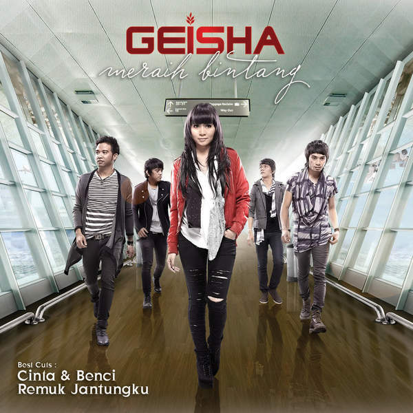
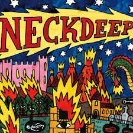

Sunny - Yorushika
you are like the wind
When I close my eyes it's dusk what are you thinking? I had my eyelids open your eyes are dark It smelled like it was going to clear up just a little bit. Sunny and sunny, flowers bloom Because it blooms and the sun shines Even the rain if it stops raining The sun will decorate you The sound that beats in my heart, calm down We are sunny winds Go beyond those clouds too far still far you look sunny Blue when I close my eyes what is sad? open eyelids Vidro in your eyes It smells like rain right now Cry to tears, cry to the sky Cry because of the rain Even the heavy rain It's sunny above the clouds Hear the sound of hitting the earth We are in a rough spring I'll cross that sea too far still far The passing rain stirs the grass Higumo: That's all because of spring. Like the wind, spring is on my chest wait for it to clear up Sunny and sunny, the sky is splitting It's because of spring that it's torn apart Even the rain if it stops raining The sun will decorate you With a heart-pounding sound We are the spring breeze I hear the clear wind in the sound Now, let this song calm down! Sunny and sunny, flowers bloom Blooming because of spring Go beyond those clouds too far still far

Karena Kamu(Speed-Up) - Geisha
Karena kamu aku rela menunggu semua
Sungguh berat yang ku rasa Karena kamu aku tetap bertahan Meskipun kini engkau di peluknya Masih mungkinkah semua abadi seperti dahulu Karenamu selalu karenamu ku cemburu Teruslah melangkah melupakan dirinya Tinggalkan dia untukku sekarang Saatnya tunjukkan semua tentang hatimu Bahwa akulah yang pantas untukmu Hanya kamu di setiap helahan nafasku Hanya kamu, hanya kamu Aku tahu engkau sangat dipuja mereka Bagai bintang yang bersinar Aku tahu ini semua jalanmu Tapi ku akan tetap menunggumu Jangan tinggalkan semua sendiri seperti dahulu Karenamu selalu karenamu ku cemburu Teruslah melangkah melupakan dirinya Tinggalkan dia untukku sekarang Saatnya tunjukkan semua tentang hatimu Bahwa akulah yang pantas untukmu Hanya kamu di setiap helahan nafasku Hanya kamu, hanya kamu Masih mungkinkah semua abadi seperti dahulu Karenamu selalu karenamu ku cemburu Teruslah melangkah melupakan dirinya Tinggalkan dia untukku sekarang Saatnya tunjukkan semua tentang hatimu Bahwa akulah yang pantas untukmu Teruslah melangkah melupakan dirinya Tinggalkan dia untukku sekarang Saatnya tunjukkan semua tentang hatimu Bahwa akulah yang pantas untukmu Hanya kamu di setiap helahan nafasku Hanya kamu, hanya kamu Hanya kamu
Shayou - Yorushika
The madder red sun,
blushing in cheeks color The setting sun softly burst out that we even not open our eyes So sad but there is no other way My hands got wet because of the Sun So dazzling but it can't be helped I'm at a loss when going home Because the red madder sun seems like to keep sinking Even though, just a bit more I could love one part of me But when I realized of the setting sun, I even not open my eyes in the silent evening calm So sad but there is no other way My hands have touched the Sun As if simmering burn, it's always my fingertips that are scorched Like grapes that have grown tall Just stop because it can't be reached I wonder if I fell in love? Even though it's just like the Sun, that's keep sinking If there is no reason, then it's true The madder red sun, blushing in cheeks color If only the setting sun that softly burst out would only shine on our path Even though, just a bit more I can love one part of me But I saw you blushing in the setting sun. In the silent evening calm, we even not open our eyesAnly - Karanokokoro
Falling through the cracks
falling into darkness I'll never let go of your hand Tell me the story of your life still on the way I'll never give up on you Falling through the cracks falling into darkness I'll never let go of your hand Tell me the story of your life still on the way I'll never give up on you an irresistible urge Casual days are love If I look back nostalgically I can always hear your voice Underdog wanders around Even if I take a detour, it's better than running away. I have to believe in myself Who do you believe? Hold your hand up to the light oh yeah Shining through the clouds falling into darkness I'll never let go of your hand Tell me what is on your mind An endless dream Chasing, we will never give up Give it up! Keep it up! Turn it upside down! Let's live together Always running at full speed Aiming for that top The place I keep searching for is I'll be waiting for you anytime Our lives are winding road Even a detour is better than going back. Even if I make a mistake, it's not a waste Proceed without hesitation Falling through the cracks falling into darkness I'll never let go of your hand Tell me the story of your life still on the way I'll never give up on you I'm just lost in a life without answers Don't give it up! Keep it up! Turn it upside down! Our hearts are connected even if we're far apart Let's live together Give it up! Keep it up! Turn it upside down! Let's live together Give it up! Keep it up! Turn it upside down! Let's live togetherBlue Encount - Polaris
That day, I decided to "protect"
The promise is in my heart If there is a life that can be saved now by losing everything I'd be happy to give it all This feeling is my first purpose in life Don't hide your scars I decided to live using despair as a weapon. I'll do my best to wipe away these tears I'll give you everything Please don't disappear That day, I decided to "protect" The promise is in my heart I'm fighting while being kept alive by someone else's life. I'm not afraid of losing anymore I hate giving up on winning I'll never run away again I just want to challenge myself to be the person I want to be. Even if it's a hopelessly beautiful thing I just want you to smile "Strength" doesn't exist to stand on something. To embrace what's important to you Even if I lose everything I'll definitely never forget you I'll do my best to wipe away these tears I'll give you everything Please don't disappear That day, I decided to "protect" The promise is in my heart Even if the hope (light) is about to disappear, goAmazarashi - Season one after another
Seasons die one after another
The voice of death becomes the wind A man who can't get drunk in a colorful city It's uncool to look up at the moon here To a life where my feet get tangled in the mud The rain tasted like alcohol Wandering around town with apathetic eyes Innocent with suspicious behavior in front of the station I'm not sure what to call me The translucent shadow is like a living wind If I sing in the rain, will the clouds break? It's the dried up life of a lively summer. Dear Sirs, A poem of insulation that speaks to the abhorrent past. The worst days, the worst dreams I can't just throw away the wreckage I'm going to take my last breath here A poem of change that will be passed on to you as the flowers bloom in future generations Surrounded by suffering, mourning and sadness Still, it's a song that never ends Even if the sun doesn't shine Tomorrow we will die one after another Even if you hurry, you won't be able to catch up and it will become the past We live fast, the fire that lights is sad The meaning of life comes later. It's too uncertain for you to be you Even if my unstable ego hates you If I at least sing, will the darkness clear up? It's a life entrusted to a rotten dream. Dear Sirs, A poem of isolation that speaks to the abominable past. The worst days, the worst dreams I can't just throw away the wreckage I'm going to take my last breath here A poem of change that will be passed on to you as the flowers bloom in future generations Surrounded by suffering, mourning and sadness Still, it's a song that never ends Even if the sun doesn't shine With a tired face and dragging my feet Frowning in the reflection of the setting sun I'm worried about whether I should go or go back. After a while, your back will start walking Yes, I have to go I'll survive no matter what We are the lives we picked up anyway. I'll leave it here. Dear Sirs, A nostalgic poem that remembers the past that is now gone. The worst days, the worst dreams If you think it's the beginning, it's a long way away The flowers will fall anyway, and life will return to the circle of reincarnation. Surrounded by suffering, mourning and sadness Still, it's a song that never ends Even if the sun doesn't shine The seasons revive one after anotherCö shu Nie - Asphyxia
Trapped in the night, the child held his breath with no expression on his face.
After all, it's not all things that can't be helped. I'm drowning in a world I can't change Open your eyes, the sinking shadow Open your eyes No matter what, this is reality What is freedom? The pain you gave me I was hoping all by myself that it might be love weed me out No need for schadenfreude I'm tired of artificial dramatics Indulge in Discord It's absurd, 'I can't help it' How long will I be able to say this? How much will I have to give up? Laughable Live even if you're broken, a disappointing end roll I will continue with a heart that has broken many times yeah Because my body gets rusty every time I take a breath Even though I'm peeling away, I just have to acknowledge it and fight. Elegy doesn't change in the slightest Start breathing in the night
Ai Higuchi - Akuma no Ko
An iron bullet is proof of justice
If you persevere, you'll get closer to becoming a hero. If you close your eyes and touch it Same shape, same body temperature devil I'm no good, is he good? There was just a wall Don't lament the fate of being born we are all free If you have wings like a bird I can go anywhere If I don't have a place to go back to I'm sure I can't go anywhere I don't want to just live The world is cruel, but I still love you No matter what I sacrifice, I'll still protect you Even if it's a mistake, I won't doubt it Being right means believing strongly in yourself. Scene of falling iron rain It looked like a movie on TV War is stupid brutality It doesn't matter, it's about a country I don't know Then why do you hate him? The reason why I can't hide my dark feelings I can't even explain it. We are full of contradictions If this word is also translated The true meaning cannot be conveyed To believe, open your eyes Only the world I touched I don't want to just live The world is cruel, but I still love you No matter what I sacrifice, I'll still protect you The shadow of the person I chose, the corpse of the one I threw away I realized that the child of the devil is growing inside me. Behind the scenes of justice, in the center of sacrifice, there is a child of the devil in my heart.Comedy - Gen Hoshino
We fought each other and almost broke down
On this playful planet An outsider since the day I was born My tears have dried up The place I return to is in my dreams We met at the end of the spill just keep a secret With you pretending to be normal I gave up looking My place was something I made. We exchanged that day better than blood a contract of hearts Shall we hold hands and go home? What shall we eat today? "This happened" I wanted to talk to you. At any time of day It's a comedy with you Dancing on the creaky bed Still laughing The playful life continues I grew up being told I was inferior. On this crazy planet I pretended to be normal and realized who decided my light was just here It came undone that day A faint curse A heartfelt goodbye Shall we go home with our heads up? Flowers in full bloom "It's so beautiful" I wanted to talk to you. any day The miracle of being with you In the kitchen that connects you to life Without being able to convey it The playful life continues after work walking together The morning sun will rise, ah Thank you Because it's not enough holding hands Let's go home now What shall we eat today? "This happened" I wanted to talk to you. At any time of day It's a comedy with you Dancing on the creaky bed Still laughing Shall we search for eternity? Let's live as much as possible No matter what happens I wanted to talk to you. forever and ever It's a comedy with you In the days we shared Before I fell down laughing The playful life continuesKeane - Somewhere Only We Know
I walked across an empty land
I knew the pathway like the back of my hand I felt the earth beneath my feet Sat by the river and it made me complete Oh, simple thing, where have you gone? I'm getting old, and I need something to rely on So, tell me when you're gonna let me in I'm getting tired, and I need somewhere to begin I came across a fallen tree I felt the branches of it looking at me Is this the place we used to love? Is this the place that I've been dreaming of? Oh, simple thing, where have you gone? I'm getting old, and I need something to rely on So, tell me when you're gonna let me in I'm getting tired, and I need somewhere to begin And if you have a minute, why don't we go Talk about it somewhere only we know? This could be the end of everything So, why don't we go somewhere only we know? Somewhere only we know Oh, simple thing, where have you gone? I'm getting old, and I need something to rely on So, tell me when you're gonna let me in I'm getting tired, and I need somewhere to begin And if you have a minute, why don't we go Talk about it somewhere only we know? This could be the end of everything So, why don't we go? So, why don't we go? Ooh, oh-oh Ah, oh This could be the end of everything So, why don't we go somewhere only we know? Somewhere only we know Somewhere only we know

Neck Deep - December
Walked around the block a thousand times
You missed every call that I had tried So now I'm giving up A heartbreak in mid December You don't give a fuck You never remember me While you're pulling on his jeans Getting lost in the big city I was looking out your window Watching all the cars go Wondering if see Chicago Or a sunset on the west coast Or will I die in the cold Feeling blue and alone I wonder if you'll ever hear this song on your stereo I hope you get your ball room floor Your perfect house with rose red doors I'm the last thing you'd remember It's been a long lonely December I wish I'd known that less is more But I was passed out on the floor That's the last thing I remember It's been a long lonely December Cast me aside to show yourself in a better light I came out grieving, barely breathing and you came out alright But I'm sure you'll take his hand I hope he's better than I ever could have been My mistakes were not intentions this is a list of my confessions I couldn't say Pain is never permanent but tonight it's killing me I hope you get your ball room floor Your perfect house with rose red doors I'm the last thing you'd remember It's been a long lonely December I wish I'd known that less is more But I was passed out on the floor That's the last thing I remember It's been a long lonely December I miss your face You're in my head There's so many things that I should have said A year of suffering, a lesson learned I miss your face (miss your face) You're in my head (you're in my head) There's so many things that I should have said (things I should have said) A year of suffering, a lesson learned I hope you get your ball room floor Your perfect house with rose red doors I'm the last thing you'd remember It's been a long lonely December (I miss you, I wish you well) I wish I'd known that less is more but I was passed out on the floor (I miss you but I wish you well) (I miss you, I miss you) and that's the last thing I remember It's been a long lonely DecemberSumika - Fiction
Well, let's start today too.
Continuing from the bookmark I posted yesterday